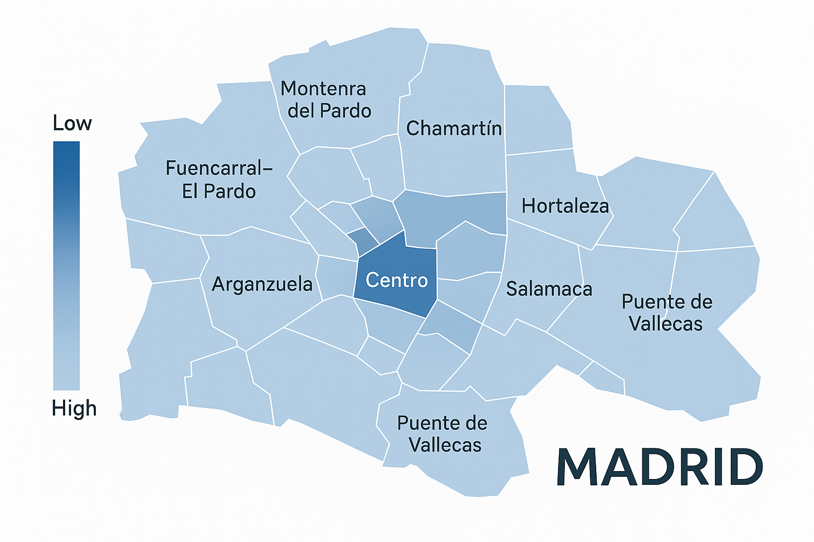

<!DOCTYPE html>
<html lang="en">
<head>
  <meta charset="UTF-8">
  <meta name="viewport" content="width=device-width, initial-scale=1.0">
  <title>Visual Estate</title>
  <link rel="stylesheet" href="../style.css">
  <link rel="'citystylesheet" hred="city.css">

</html>


<body>


<nav>
    <a href="../index.html" class="logo">Visual Estate</a>
    <div class ="city_nav">Madrid</div>
    
    <div class="nav-links">
      <a href="../milestone_2.html" style="font-style: italic; color: rgb(169, 45, 45);">About Milestone 2</a>
      <a href="#">About</a>
      <div class="dropdown">
        <a>Cities ▾</a>
        <div class="dropdown-content">
          <a href="berlin.html">Berlin</a>
          <a href="london.html">London</a>
          <a href="madrid.html">Madrid</a>
        </div>
      </div>
      <a href="#">Contact</a>
    </div>
  </nav>


  <div class='city-infos'>
    <h1>Madrid: where tradition meets transformation</h1>
<p>Madrid is a city where deep-rooted tradition blends seamlessly with modern growth. Its real estate market mirrors this blend, offering a wide range of housing—from classic Spanish architecture in historic barrios to sleek new developments on the city’s outskirts.</p>
<p>In central Madrid, areas like Salamanca and Chamberí feature elegant apartments and vibrant cultural life, while outer districts offer more affordable options and growing infrastructure. Each neighborhood brings its own character, contributing to Madrid’s rich and evolving urban landscape.</p>

</div>

  


</body>